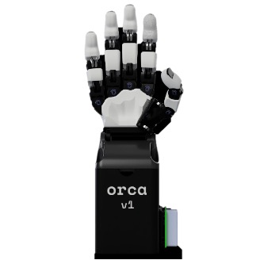
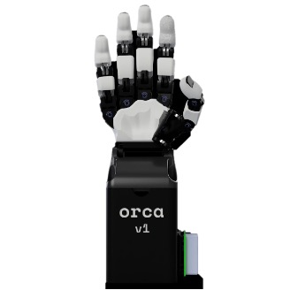

|
Embodied MAnipulation InteLligence （EMAIL） Robotics Lab
|
Introduction
|
|
The EMAIL-lab at the Great Bay University（GBU）focuses on research in robotic manipulation, with a particular emphasis on tasks involving deformable object manipulation, multi-modal dexterous manipulation (e.g., vision and touch), as well as task and motion planning. By integrating data-driven learning, geometric modeling, and robot control techniques, the lab is dedicated to achieving precise perception, modeling, planning, and control during manipulation processes, with the goal of enabling robots to perform at or even surpass human-level manipulation capabilities.
|
|
Team Members
|

Dr. Peng Zhou
Lab PI
Assistant Professor
@ The Great Bay University
|
|
Prof. Jia Pan
Co-PI on Ph.D. program
@ The University of Hong Kong
|

Prof. Xin Jiang
Co-PI on Ph.D. program
@ Harbin Institute of Technology, Shenzhen
|
Prof. Kan Zhen
Co-PI on Postdoc program
@ University of Science and Technology of China
|
Dr. Jun Hu
Postdoc Researcher
Ph.D. in Precision Instrument and Machinery from
University of Science and Technology of China
|
Zhongxun Li
Visiting Ph.D. Student
The University of Hong Kong
BEng, MEng degree from Imperial College London
|
Ziyuan Wang
Ph.D. Student (2025)
MSc in Electronic Information Engineering
from Huazhong University of Science and Technology
|
Zeliang Guo
Visting Student
The University of Manchester
|
|
News
|
-
[2025] Workshop on Contact and Impact-aware Manipulation (IROS 2025) is accepted by IROS 2025.
-
[2025] Dr. Zhou is serving as an Associate Editor for IEEE Robotics and Automation Letters.
-
[2025] A Joint Learning of Force Feedback of Robotic Manipulation and Textual Cues for Granular Materials Classification, IEEE Robotics and Automation Letters.
-
[2025] Iterative Shaping of Multi-Particle Aggregates based on Action Trees and VLM, IEEE Robotics and Automation Letters.
-
[2025] Explicit-Implicit Subgoal Planning for Long-Horizon Tasks with Sparse Rewards, IEEE Transactions on Automation Science and Engineering.
-
[2024] Deformable Bag Manipulation using Neural Particle-based Dynamics Model, IEEE/ASME Transactions on Mechatronics.
-
[2024] Interactive Perception for Deformable Bag Manipulation, IEEE Robotics and Automation Letters.
-
[2023] Imitating Learning for Tool-based Garment Folding, IEEE Transactions on Industrial Informatics.
- Track 3 Champion, Zhuhai International Dexterous Manipulation Challenge, 2024.
- IEEE R10 Outstanding Volunteer Award, 2023.
- Outstanding Young Researcher, National Engineering Research Center, 2022.
|
|
Robots
|
 


|
|
Join Us
|
|
We are always looking for talented and motivated individuals to join our lab. If you are interested in robotics, machine learning, or computer vision, please contact us at pzhou AT gbu DOT edu DOT cn.
|
|